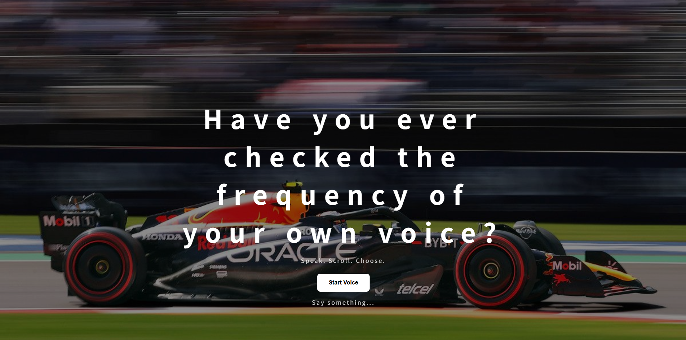

Selected Projects
.jpg)


Apple Wireless Charger(2025)
A cinematic 3D rendering exploration
focused on movement, lighting,
material reflections, and immersive
digital storytelling.
View Detail
Life is built from what remains (2026)
This website was created through coding as an exploration of the question: “What is life?”
At first, when exploring the website without any explanation, users may feel confused about what actions to take or how they are supposed to respond. In the same way that no one provides a clear answer or direction in life, the explanation for the website is hidden as a question mark among the text at the bottom of the first page.
Go to Website
At first, when exploring the website without any explanation, users may feel confused about what actions to take or how they are supposed to respond. In the same way that no one provides a clear answer or direction in life, the explanation for the website is hidden as a question mark among the text at the bottom of the first page.

Driven by Frequency(2025)
An interactive web experience that transforms
human vocal frequencies into visual speed,
motion, and dynamic automotive response.
Users navigate the website through their voice,
allowing sound to become a form of interaction
and movement.
Go to Website
The Spin Never Stops,
Yet We Remain Seated (2025) Collaboration
Yet We Remain Seated (2025) Collaboration
The image of daily repetition begins with the image of repetition. Laundry once performed at the public site becomes a metaphor,but for the universal rhythm of life.
Rotation here is not a mere physical motion; it is the persistence of human existence, where repetition, circulation, and variation coexist. Rotation here embodies this paradox: while the body remains in place, life keeps revolving.
The audience is invited to confront their own cycle of living, the weight of repetition, and the stories that emerge within it.
(Motor,Korean,Paper,Wire,
Skirt,Foam)
View Detail


Expandable Carrying System Bag(2026)
A functional carrying system designed
for transitions between work,
travel, and fitness environments.
View Detail


Modular Shoe Rack(2026)
A customizable shoe storage system
designed for scalable organization
and spatial flexibility.
View Detail


Portable Battery Design(2026)
Experimental exploration combining
East Asian painting aesthetics,
atmospheric studies,
and material-based visual processes.
View Detail